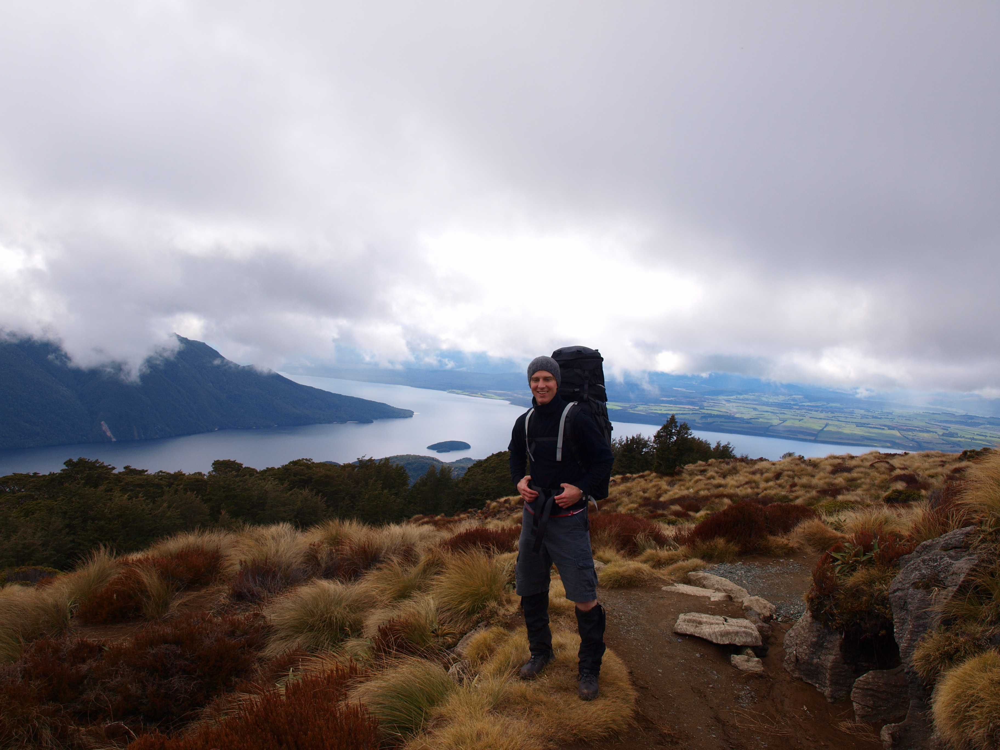

Kepler Track

Routeburn Track

Take a walk, a Great Walk, through some of New Zealand’s most awe-inspiring landscapes.
New Zealand's nine Great Walks are premier tracks that pass through diverse and spectacular scenery. From native forests, lakes and rivers to rugged mountain peaks, deep gorges and vast valleys...there's a Great Walk for everyone!
Great Walks tracks are well formed and easy to follow. While most people prefer to explore on their own terms, guided trips offer a bit more comfort. Great Walks are accessible from major towns that are well serviced by local operators and accommodation and transport providers.

New Zealand’s sparse population and huge wilderness areas mean that most walking tracks are remote from many of the comforts of civilisation. Facilities at the 900 huts maintained by DOC are basic, and walkers need to equip themselves with adequate food and clothing.
Weather conditions can change rapidly, especially in the mountains, and it is essential, even in summer, to carry warm, waterproof clothing. No hike should be undertaken without consulting a detailed guide book and a map.
For any of the 'Great Walks', a pass is required for accommodation in huts, but permits or admission fees are not required for day walking. Passes are issued by the Department of Conservation.